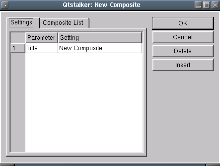
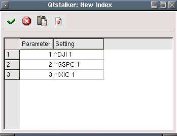
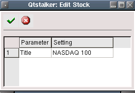
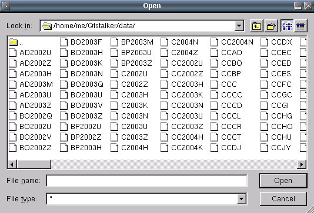

The work with charts dialog allows you to view, create, edit, delete charts. Here is an example of large list of charts.
You may click on any of the header columns to sort the list. The columns are defined as:

This will load and display the selected chart. eg ^IXIC
Here you can create a new Composite type of chart. A composite is a chart that is made up of other charts. Each symbol in the composite is given a weight and then calculated depending on the type. The types are:
Selecting this will bring up a series of dialogs. First you are asked for a name to call your new composite. The name must be unique, if not an error message will display.

After entering a new name, a second dialog will ask you to choose the composite type to create.

After selecting a composite type, a dialog that allows you to enter the symbols and weights for the composite will appear. This dialog has 2 tabs.
The Settings tab allows you to edit the "Title" of the composite.

The Composite List tab is where you add, delete and edit the weights and symbols in the composite. A weight of 1 means 100%. A weight of 0.5 means 50%. A weight of 2 means 200%.

Opens a dialog that allows you to edit some of the chart parameters. Only the parms listed can be edited. Parms are dependent on the chart types, so not every chart shares the same parms.

Permanently delete the chart selected.
Brings up a file selection dialog that allows you to dump the contents of the selected files to ASCII. The exported files will be placed in the Qtstalker export directory. The exported file is in the Qtstalker format of key/data pairs, so it will not be useful for most of you. I include it for use in correcting data errors and for disaster recovery operations. The Qtstalker quote plugin can import this file format to rebuild the chart. Don't do this unless you know what you are doing.

Closes the Work with Charts dialog.